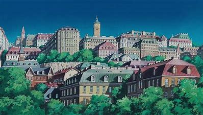

About Kiki
Kiki is a little girl that is a witch and she is searching for a town to live in because in her world each witche must have a town on their own
Kiki's town of choice : Koriko
Kiki's characteristics
- she's got a cat named "cat"
- She has a great personnality
- She's a kid but she is probably smarter than ya
Kiki's friends and encounters
At the start kiki was not on the good track to set in properly in the town but she got lucky when she met ... on of the baker of the town, she is probably he best person by far in the town